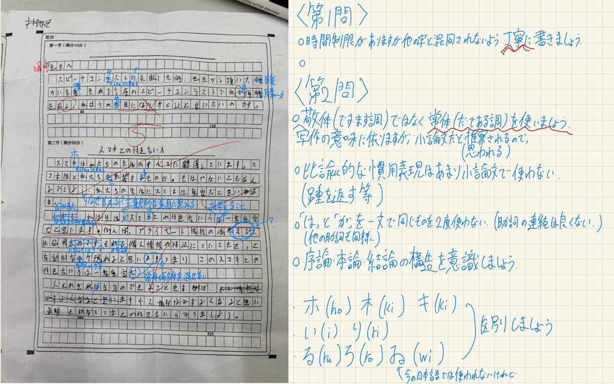
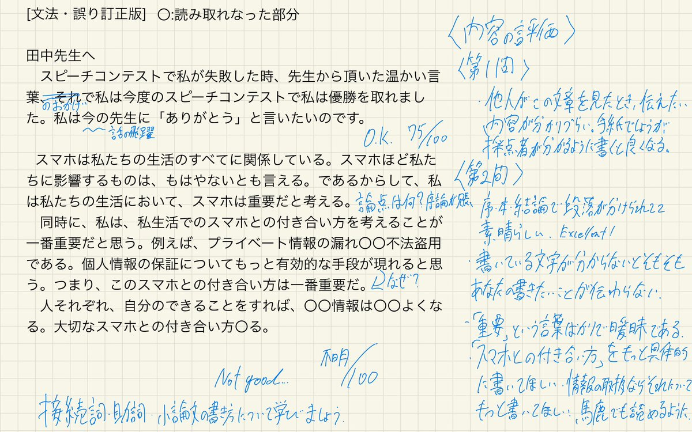

@tzug_c @AriaDoneit9927 評価ありがとう～
現在この学生は格助詞の問題から現れたロジテックの問題について
専門練習を検討しています
よろしければ Microsoft Teams や Discord を追加してより深い検討を一緒にしてくれていいでしょうか

現在この学生は格助詞の問題から現れたロジテックの問題について
専門練習を検討しています
よろしければ Microsoft Teams や Discord を追加してより深い検討を一緒にしてくれていいでしょうか


@AriaDoneit9927 1時間敢闘し講評しました
この人が文字をもっと綺麗に書けてたらもっとまともな評価が書けたかなと思いつつ...この子を褒める係はAoiさんに任せます
文法的なミス自体は少ないですgood
ただ論理の飛躍が目立つなぁという印象を受けました
この人の中で議論が完結してしまっている気がする https://t.co/MHAgQb4Hbt
この人が文字をもっと綺麗に書けてたらもっとまともな評価が書けたかなと思いつつ...この子を褒める係はAoiさんに任せます
文法的なミス自体は少ないですgood
ただ論理の飛躍が目立つなぁという印象を受けました
この人の中で議論が完結してしまっている気がする https://t.co/MHAgQb4Hbt